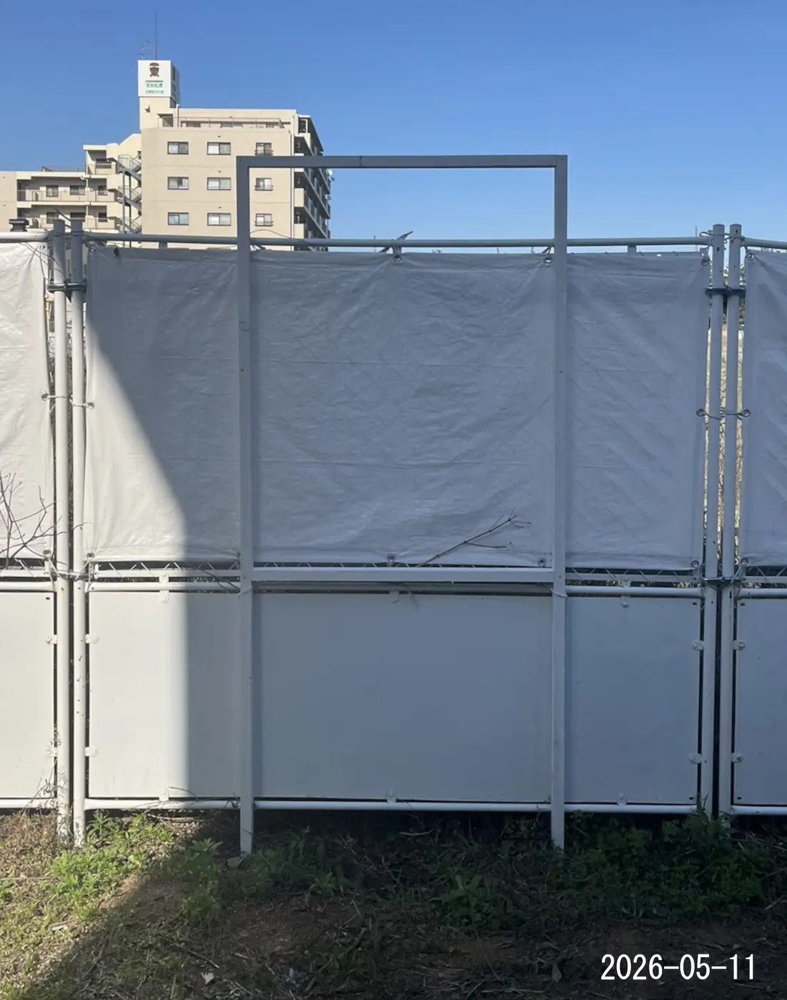
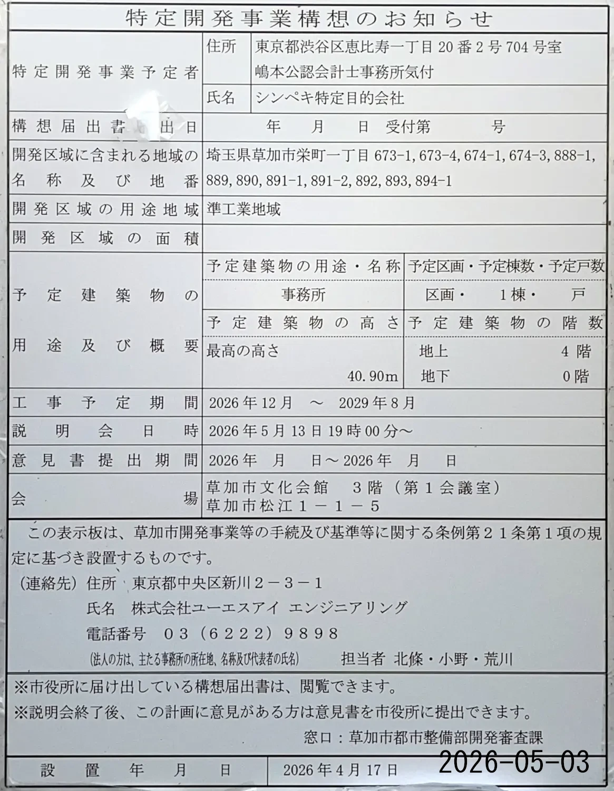
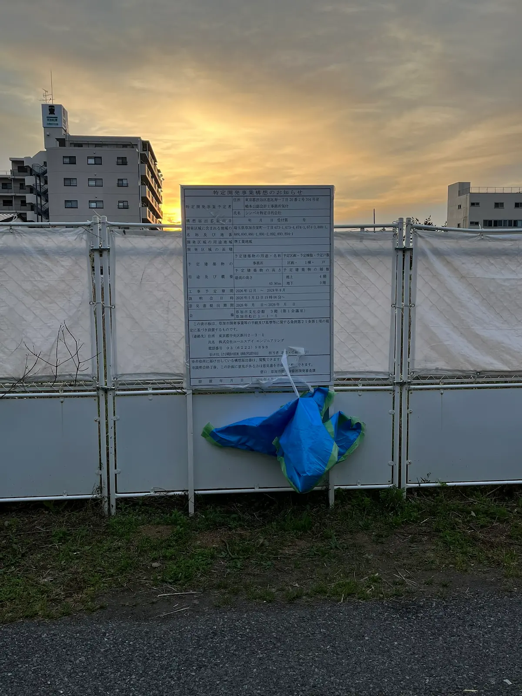
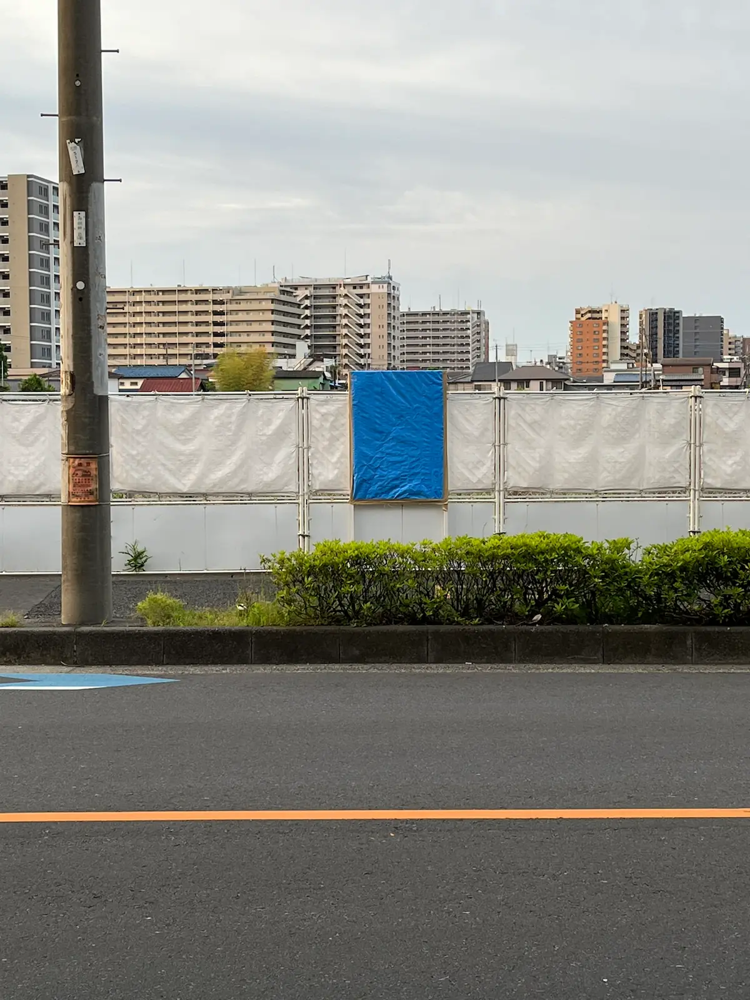
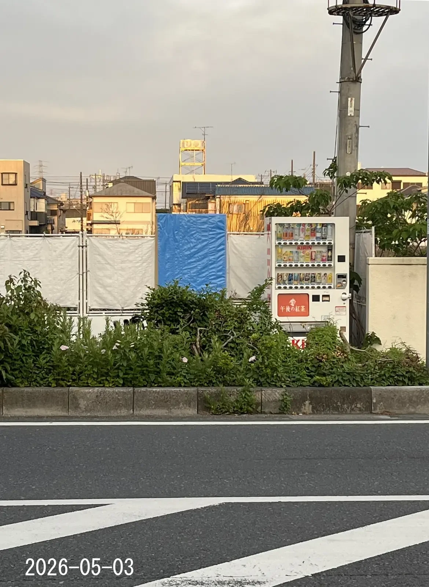

草加市栄町一丁目の旧福野段ボール工業跡地において開発計画の標識が設置されました。
本サイトは、現地標識や公開資料の内容を周辺住民が各自で確認しやすいよう、有志によって個人的に作成された資料置き場です。事業者や行政による公式サイトではありません。
現地状況および関係機関への確認結果は以下の通りです。
情報の正確性については、以下の公的窓口にて確認が可能です。
大規模な開発事業においては、行政手続や周辺環境への配慮として、一般的に以下の項目が住民説明や審査の対象となります。
現在、現地に案内等は存在しません。





5月10日まで現地に掲示されていた標識に基づくデータです。
| 建築主 | シンペキ特定目的会社 |
|---|---|
| 設計者 | 株式会社ユーエスアイ エンジニアリング |
| 用途 / 階数 | 事務所 / 地上4階 |
| 高さ | 40.90m |
| 予定工期 | 2026年12月 〜 2029年8月 |
| 説明会（当初予定） | 2026年5月13日(水) 19:00〜 （草加市文化会館 3階 第1会議室） |